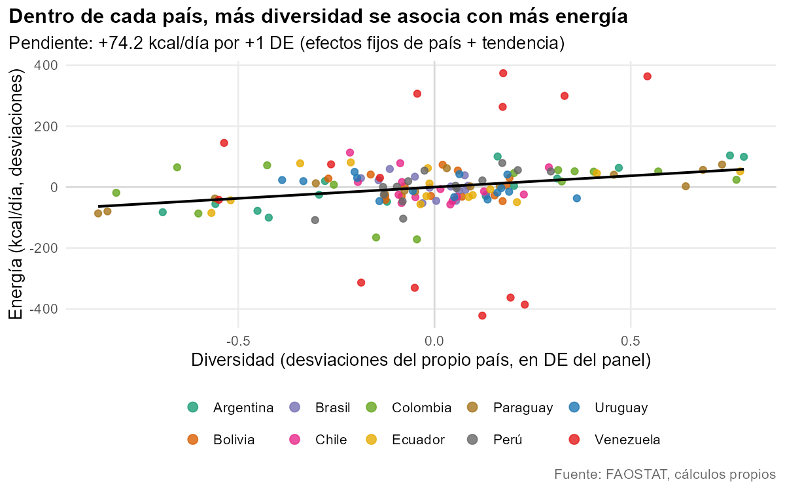

Diversidad de la oferta alimentaria en Sudamérica
¿Los años en que un país ofrece una oferta alimentaria más diversa son también años con más energía, más grasa y mejor calidad? Lo miramos con un panel de 10 países sudamericanos entre 2010 y 2023 (FAOSTAT), en dos etapas: un análisis descriptivo y uno diagnóstico, más un pronóstico breve.

Tres hallazgos
- Dentro de cada país, más diversidad va con más energía y más grasa. +1 DE de diversidad se asocia con +74,2 kcal/persona/día (+2,5 %) y +11,4 g de grasa/día (+12 %). Ambas resisten el bootstrap salvaje y la corrección de Holm; la asociación con la calidad de la oferta no aparece.
- Es frágil. Con efectos de año ninguna asociación sobrevive a Holm, y en primeras diferencias el efecto sobre la energía desaparece (-14,5 kcal, p = 0,53), aunque el de la grasa se mantiene. Entre países (n = 10) tampoco sobrevive ninguna.
- Para pronosticar, repetir el último valor basta. Ni Holt ni ARIMA mejoraron al método ingenuo (MAE 35,7 kcal/día en orígenes móviles); para el promedio regional en 2026 sale ≈ 2 996 kcal/día [2 920 – 3 072].
Son asociaciones entre medias nacionales de disponibilidad, no efectos causales.
Los informes
1. Análisis descriptivoCalidad de datos, tendencias, Mann-Kendall, PCA y conglomerados.
2. Análisis diagnósticoPanel con efectos fijos y aleatorios, inferencia para pocos grupos, robustez y pronóstico.
3. Modelos multivariadosACP y conglomerados de la oferta alimentaria; regresión multivariada (MANCOVA) con bootstrap salvaje por país.
Repositorio y documentación
Código, datos procesados y cómo reproducirlo: github.com/JPS4L4/faostat-diversidad-alimentaria. Resumen en inglés: README in English.